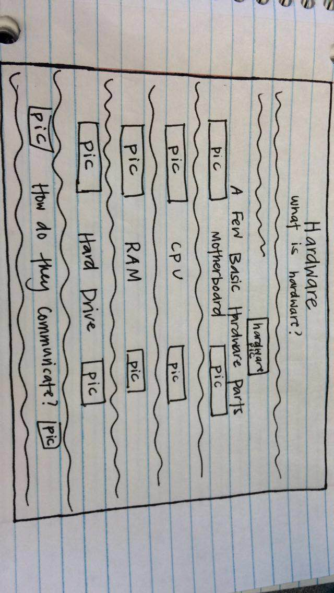

Start by creating an idea of what you want your hardware page to look like. I drew my hardware page on paper before (seen in image below), then found the tags I would need to make my page look like the one I drew. I based my layout off of informational webpages I had seen previously that were formatted in such a way that understanding it was easy.
Start with the basics by inputting all of the text you want your page to display. You will need to use HTML5. I used the heading tags (<h1> </h1>) and paragraph tags (<p> </p>) mostly. The heading tag's font size can be changed, <h1> being the largest font size, <h6> being the smallest, and anything in between the two values varying in size. After formatting my titles with the proper heading for the desired font size, I began work on the information this website would convey. This step is where I inserted all of the definitions of the different Hardware parts. The image below shows my HTML code and how my page looked after everything had been entered.
Once you have all of your text inputted, we can start using CSS to make the page pretty! I used background color, image insertion, borders, and text changes to make my page more user-friendly. This is the step where I inserted all of the pictures seen on the Hardware page. Following my original plan of inserting one image next to each definition, I used the tag (HTML). I then used the align attribute to position the image. The screenshot below shows the CSS code I have written for the Hardware page. As you can see, I have a border, background color, font change, and more. Each change to an aspect of the page can be specified by its attributes, for example font size is an attribute of the font tag.
Once you are satisfied with the features the page has, you are all done! Be sure to revise your work, as you do not want any spelling or grammar errors that could hamper the user's enjoyment of the page. Additionally, you should also check for any ways you could improve the user's experience.